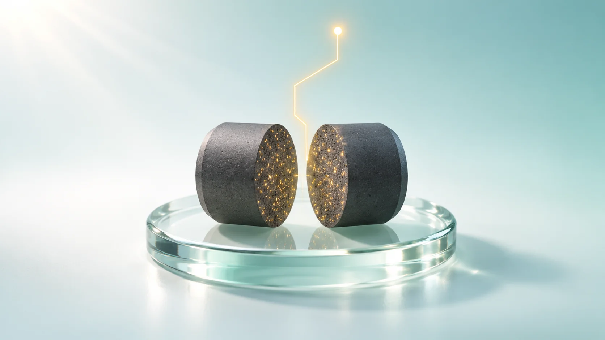
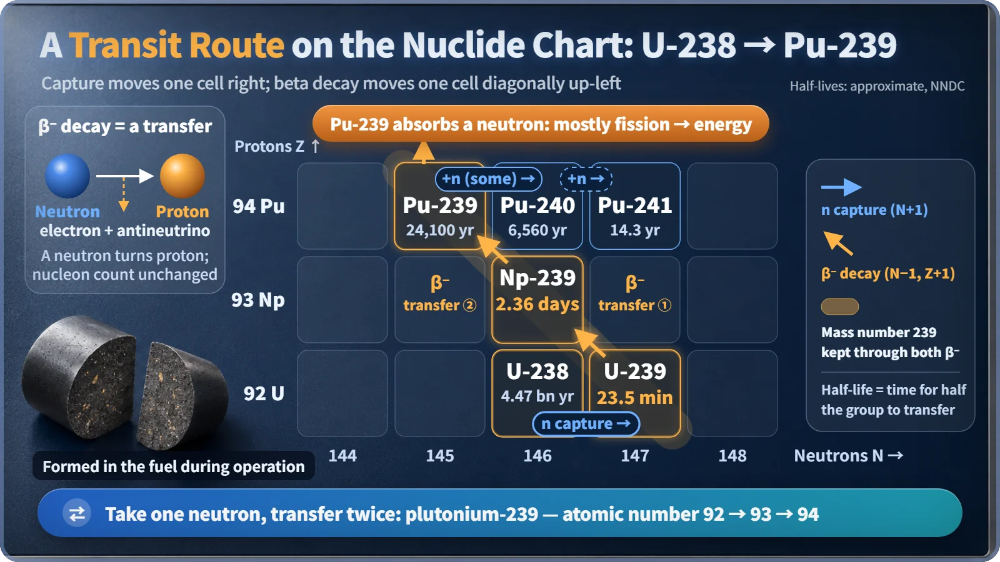
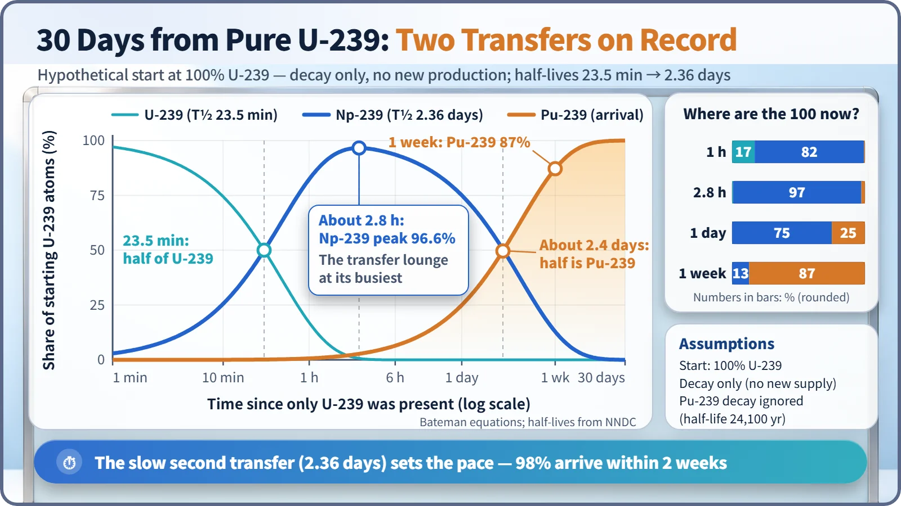

Nuclear Reactions & Fission · 044
Two Transfers and You've Arrived — How Plutonium-239 Is Made Inside a Reactor
No plutonium is loaded into a light water reactor, yet about a third of its heat comes from plutonium made inside the fuel by a neutron capture and two beta decays.

Plutonium-239 forms inside reactor fuel when uranium-238 captures one neutron and then beta-decays twice: to neptunium-239 (half-life about 23.5 minutes) and then to plutonium-239 (half-life about 2.36 days). Much of it splits right where it forms, supplying about one-third of a light water reactor's heat. [1]
A fuel nobody loaded makes a third of the power?
The fuel that goes into a light water reactor, the most common type of nuclear plant in South Korea and around the world, is uranium only. Not a single speck of plutonium is loaded. Yet according to the World Nuclear Association, about one-third of the heat a light water reactor produces comes from plutonium. Where does a fuel that nobody put in come from?
It's made inside the reactor, all by itself. Let's follow the route by which uranium-238 turns into plutonium-239.
Departure station: uranium-238. Ticket: one neutron
More than 95% of light water reactor fuel is uranium-238, which doesn't split easily. That doesn't make it mere filler, and this route is where its value shows.
The journey looks a lot like getting somewhere by public transit with two transfers. The ticket you get at the departure station is a single neutron. When a uranium-238 nucleus grabs a passing neutron (neutron capture), it becomes uranium-239. The mass number goes up by one, from 238 to 239, but the number of protons stays at 92, so it's still uranium. We've just boarded the first bus. [2]

First transfer: wait 23.5 minutes, then on to neptunium
Uranium-239 has one neutron too many and doesn't last long. One neutron inside the nucleus changes into a proton and flings an electron out: beta decay. Since the number of protons is an element's name tag, element 92, uranium, becomes element 93, neptunium-239. Only one particle changed type, so the mass number stays at 239. Like a passenger switching lines, the number of nucleons is the same; only the element's name changes.
The transfer wait corresponds to the half-life, the time it takes for half of a group of nuclei to change. For uranium-239 it is about 23.5 minutes. [2]
Second transfer: wait 2.36 days, and plutonium has arrived
Neptunium-239 beta-decays once more. With 94 protons, it arrives as plutonium-239. This wait is about 2.36 days, more than 140 times longer than the first, so the second transfer sets the pace of the whole journey.
The names follow the order of the solar system: uranium from Uranus, neptunium from Neptune, plutonium from Pluto. Atomic numbers 92, 93 and 94 line up like the planets.
The wait isn't a timetable where everyone departs at exactly the same moment. The amount left shrinks as N = N₀ × (1/2)^(t/T½), where N₀ is the starting amount, t the time elapsed and T½ the half-life. When any individual nucleus transfers is a matter of probability.

| Time after irradiation stops | What has happened |
|---|---|
| 1 hour | Only 17% is still uranium-239; most is neptunium-239 |
| About 2.8 hours | Neptunium-239 peaks at nearly 97% (96.6%) |
| About 2.4 days | Half has arrived as plutonium-239 |
| 2 weeks | 98% is plutonium-239 |
Plutonium gets to work the moment it arrives
Plutonium-239, like uranium-235, is fissile: it splits readily when hit by a slow neutron. Plutonium freshly born inside a fuel rod isn't moved anywhere. It gets hit by a neutron right where it is, splits, and releases about 200 MeV each time. According to the World Nuclear Association, more than half of the plutonium formed in a reactor burns on the spot, accounting for roughly one-third of the thermal output. [1]
Passengers who ride one stop further
Not every plutonium-239 nucleus splits. Most of those that absorb a neutron (about three-quarters, for slow neutrons) do fission, but the rest simply hold onto the neutron and become plutonium-240. One more capture gives plutonium-241, which splits readily again, and after that plutonium-242. So the longer fuel is burned, the lower the share of 239 in its plutonium.
Spent fuel from a light water reactor contains a little over 1% plutonium. In the World Nuclear Association's example (burnup of 42 GWd/t), it's about 1.15%, of which about 53% is plutonium-239, about 25% plutonium-240 and about 15% plutonium-241; the values depend on reactor type and burnup. Because this plutonium is fissile material, its quantity is internationally accounted for and monitored under IAEA safeguards. [3]
Key takeaways
Uranium-238 captures one neutron and becomes uranium-239, then transfers twice by beta decay, to neptunium-239 (about 23.5 minutes) and plutonium-239 (about 2.36 days); the mass number stays at 239 while the atomic number goes 92 → 93 → 94. Much of the plutonium splits on the spot, making about one-third of the reactor's heat, and some rides on to plutonium-240 and 241. A reactor burns fuel and makes new fuel at the same time.